1056B90 system cable bundle - r + r
- Path
- Procedures > 10 ENGINE > 1056 PETROL INJECTION SYSTEM > 1056B MULTI-POINT INJECTION SYSTEM (MPI) > 1056B90 system cable bundle - r + r
- Kind
- repair procedure (removal / refitting; the operation number is the code)
- Applies to
- engines: 1.4 8v, 1.6 16v; all production periods
- Interactive page
- https://sloeber94.github.io/elrnDB-fDbl/en/#/2584361
Applies to: engines: 1.6 16v; all production periods
 Removing
Removing
 Refitting
RefittingPosition the vehicle on a lift.
Disconnect the negative battery lead.
Description | Connector | |
|---|---|---|
- | Battery |
Op. 1048A32 HOSE FROM AIR FILTER TO INTAKE MANIFOLD - R.R.
Op. 1056B82 INJECTION/IGNITION SYSTEM E.C.U. (ONE) - R + R
Remove the engine compartment junction unit cover, then release the control unit from the mount retaining clips.
1. Disconnect engine compartment junction unit electrical connection (1a), disconnect the dashboard wiring harness connectors (1b) and (1c).
Description | Connector | |
|---|---|---|
1a | Engine compartment junction unit |
Description | Connector | |
|---|---|---|
1b | Front/engine coupling |
Description | Connector | |
|---|---|---|
1c | Front/engine coupling |
Fold the wiring harness onto the power unit.
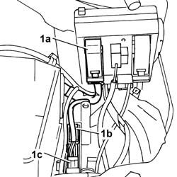
Applies to: engines: 1.6 16v; all production periods
Release the wiring from the retaining clips in the battery holder area.
1. Disconnect the electrical connection for the throttle casing actuator.
Description | Connector | |
|---|---|---|
1 | Integrated throttle casing actuator |
2. Disconnect the electrical connection for the front Lambda sensor.
Description | Connector | |
|---|---|---|
2 | Lambda sensor on pre-catalyzer |
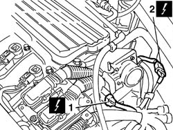
Applies to: engines: 1.6 16v; all production periods
1. Disconnect the electrical connection for the intake air temperature/pressure sensor.
Description | Connector | |
|---|---|---|
1 | Integrated air temperature sensor |
2. Disconnect the electrical connection for the fuel vapour recovery solenoid valve.
Description | Connector | |
|---|---|---|
2 | Fuel vapour recovery solenoid valve |
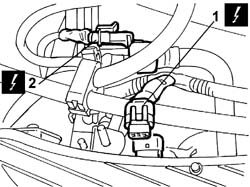
Applies to: engines: 1.6 16v; all production periods
1. Disconnect the engine coolant temperature sensor on the thermostat unit.
Description | Connector | |
|---|---|---|
1 | I.E. engine temperature sensor |
Open the retaining collar and release the wiring.
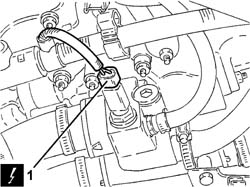
Applies to: engines: 1.6 16v; all production periods
1. Disconnect the electrical connection for the injectors.
Description | Connector | |
|---|---|---|
1 | Injector coupling |
2. Disconnect the electrical connections for the ignition coils.
Description | Connector | |
|---|---|---|
2 | Injector |
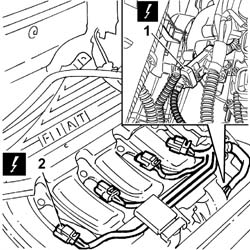
Applies to: engines: 1.6 16v; all production periods
1. Unscrew bolts (1a) on the coil covers and disconnect earth leads (1b).
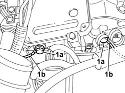
Applies to: engines: 1.6 16v; all production periods
1. Disconnect the electrical connection for the speedometer sensor.
Description | Connector | |
|---|---|---|
1 | Speedometer sensor |
2. Disconnect the electrical connection for the rear Lambda sensor.
Description | Connector | |
|---|---|---|
2 | Lambda sensor on catalyzer |
Open the wiring retaining band.
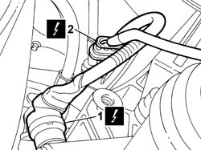
Applies to: engines: 1.6 16v; all production periods
Raise the lift.
1. Undo the nuts (1a) and release the wiring harness protection (1b).
2. Disconnect the electrical connection for the rpm sensor.
Description | Connector | |
|---|---|---|
2 | Rpm sensor |
3. Disconnect the electrical connection for the detonation sensor.
Description | Connector | |
|---|---|---|
3 | Detonation sensor |
4. Disconnect the electrical connection for the engine oil pressure sensor.
Description | Connector | |
|---|---|---|
4 | Insufficient engine oil pressure sensor (switch) |
5. Disconnect the electrical connection for the starter motor.
Description | Connector | |
|---|---|---|
5 | Starter motor |
6. Disconnect the electrical connection for the alternator.
Description | Connector | |
|---|---|---|
6 | Alternator |
7. Disconnect the electrical connection for the timing sensor.
Description | Connector | |
|---|---|---|
7 | Timing sensor |
Lower the lift and remove the wiring from the engine compartment.
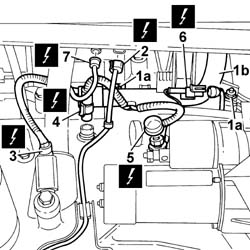
Applies to: engines: 1.6 16v; all production periods
Refitting
RemovingPlace the system cable loom back in its housing and fasten it using the bands.
Connect the electrical connection for the timing sensor.
Description | Connector | |
|---|---|---|
- | Timing sensor |
Connect the electrical connection for the alternator.
Description | Connector | |
|---|---|---|
- | Alternator |
Connect the electrical connection for the starter motor.
Description | Connector | |
|---|---|---|
- | Starter motor |
Connect the electrical connection for the engine oil pressure sensor.
Description | Connector | |
|---|---|---|
- | Insufficient engine oil pressure sensor (switch) |
Connect the electrical connection for the detonation sensor.
Description | Connector | |
|---|---|---|
- | Detonation sensor |
Connect the electrical connection for the rpm sensor.
Description | Connector | |
|---|---|---|
- | Rpm sensor |
Tighten the wiring harness protection nuts.
Connect the electrical connection for the rear Lambda sensor.
Description | Connector | |
|---|---|---|
- | Lambda sensor on catalyzer |
Close the wiring retaining band.
Connect the electrical connection for the speedometer sensor.
Description | Connector | |
|---|---|---|
- | Speedometer sensor |
Position the earth leads and tighten the nuts to the coil covers.
Connect the electrical connections for the ignition coils.
Description | Connector | |
|---|---|---|
- | Injector |
Connect the electrical connection for the injectors.
Description | Connector | |
|---|---|---|
- | Injector coupling |
Connect the engine coolant temperature sensor on the thermostat unit.
Description | Connector | |
|---|---|---|
- | I.E. engine temperature sensor |
Reclose the engine wiring retaining band on the thermostat unit.
Connect the electrical connection for the fuel vapour recovery solenoid valve.
Description | Connector | |
|---|---|---|
- | Fuel vapour recovery solenoid valve |
Connect the electrical connection for the intake air temperature/pressure sensor.
Description | Connector | |
|---|---|---|
- | Integrated air temperature sensor |
Connect the electrical connection for the front Lambda sensor.
Description | Connector | |
|---|---|---|
- | Lambda sensor on pre-catalyzer |
Connect the electrical connection for the throttle casing actuator.
Description | Connector | |
|---|---|---|
- | Integrated throttle casing actuator |
Close the wiring retaining collars on the battery holder.
Connect the dashboard wiring harness connectors.
Description | Connector | |
|---|---|---|
- | Front/engine coupling |
Description | Connector | |
|---|---|---|
- | Front/engine coupling |
Connect the electrical connection for the engine compartment junction unit coupling.
Description | Connector | |
|---|---|---|
- | Engine compartment junction unit |
Place the junction unit in its original position and reclose the retaining bolts to the protective box.
Reclose the engine compartment junction unit protective cover.
Op. 1056B82 INJECTION/IGNITION SYSTEM E.C.U. (ONE) - R + R
Op. 1048A32 HOSE FROM AIR FILTER TO INTAKE MANIFOLD - R.R.
Connect the negative battery terminal.
Description | Connector | |
|---|---|---|
- | Battery |
Remove the vehicle from the lift.
Applies to: engines: 1.4 8v; all production periods
Removing
Refitting- Position the vehicle on a lift.
- Disconnect the negative battery terminal.
Op. 1048A10 AIR FILTER ASSEMBLY - R.R.
1. Disconnect the electrical connection for the Lambda sensor upstream of the catalytic converter.
Description | Connector | |
|---|---|---|
1 | Lambda sensor on catalyzer |
2. Disconnect the electrical connection for the Lambda sensor downstream of the catalytic converter.
Description | Connector | |
|---|---|---|
2 | Lambda sensor on catalyzer |
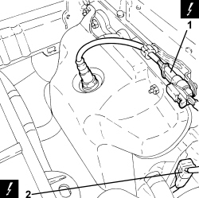
Applies to: engines: 1.4 8v; all production periods
1. Disconnect the intermediate engine wiring coupling.
Description | Connector | |
|---|---|---|
1 | Engine cables/engine services cable coupling |
2. Connect the electrical connection for the injection control unit.
Description | Connector | |
|---|---|---|
2 | Engine management control unit |
3. Undo the nut and disconnect the earth lead from the injection control unit mount.
Description | Connector | |
|---|---|---|
3 | Injection control unit earth |
Description | Connector | |
|---|---|---|
4 | Timing sensor |
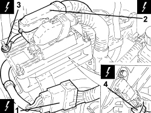
Applies to: engines: 1.4 8v; all production periods
1. Disconnect the electrical connection from the ignition coil module.
Description | Connector | |
|---|---|---|
1 | Ignition coil |
2. Disconnect the intermediate injector wiring coupling.
Description | Connector | |
|---|---|---|
2 | Injector coupling |
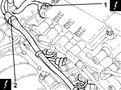
Applies to: engines: 1.4 8v; all production periods
1. Disconnect the electrical connection for the throttle casing.
Description | Connector | |
|---|---|---|
1 | Integrated throttle casing actuator |
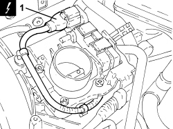
Applies to: engines: 1.4 8v; all production periods
1. Disconnect the electrical connection for the engine coolant temperature sensor.
Description | Connector | |
|---|---|---|
1 | Engine coolant temperature sensor/sender unit |
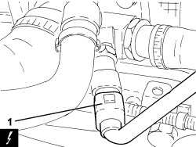
Applies to: engines: 1.4 8v; all production periods
1. Disconnect the electrical connection of the fuel vapour flow enablement solenoid valve.
Description | Connector | |
|---|---|---|
1 | Fuel vapour recovery solenoid valve |
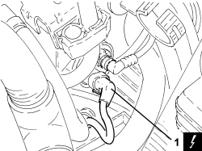
Applies to: engines: 1.4 8v; all production periods
1. Disconnect the electrical connection for the atmospheric pressure sensor.
Description | Connector | |
|---|---|---|
1 | Absolute pressure sensor |
2. Disconnect the electrical connection for the air temperature/pressure sensor.
Description | Connector | |
|---|---|---|
2 | Air pressure - temperature sensor |
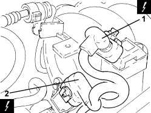
Applies to: engines: 1.4 8v; all production periods
1. Disconnect the electrical connection for the variable valve timing solenoid.
Description | Connector | |
|---|---|---|
1 | Variable valve timing actuator | See N076 PHASE TRANSFORMER ACTUATOR |
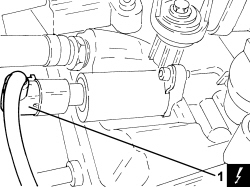
Applies to: engines: 1.4 8v; all production periods
1. Disconnect the electrical connection for the rpm sensor.
Description | Connector | |
|---|---|---|
1 | Rpm sensor |
2. Disconnect the electrical connection for the minimum engine oil pressure switch.
Description | Connector | |
|---|---|---|
2 | Insufficient engine oil pressure sensor |
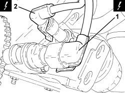
Applies to: engines: 1.4 8v; all production periods
1. Undo the bolt and remove the earth lead from the engine block.
Description | Connector | |
|---|---|---|
1 | Earth on engine |
2. Open the protective cover (2a), undo the nut (2b) and disconnect the starter motor electrical connections (2c).
Description | Connector | |
|---|---|---|
2c | Starter motor |
3. Disconnect the electrical connection for the detonation sensor.
Description | Connector | |
|---|---|---|
3 | Detonation sensor - 2 |
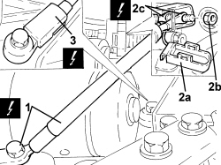
Applies to: engines: 1.4 8v; all production periods
1. Undo the nut and disconnect the alternator earth lead.
Description | Connector | |
|---|---|---|
1 | Alternator |
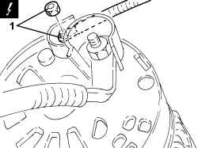
Applies to: engines: 1.4 8v; all production periods
- Remove the engine wiring harness.
Applies to: engines: 1.4 8v; all production periods
Refitting
Removing- Place the wiring harness in its seat.
- Connect the earth lead to the alternator.
- Connect the electrical connection for the detonation sensor.
- Connect the electrical connections for the starter motor, tighten the nut and close the protective cover.
- Connect the earth lead to the engine block.
- Connect the electrical connection for the minimum engine oil pressure switch.
- Connect the electrical connection for the rpm sensor.
- Connect the electrical connection for the variable valve timing solenoid.
- Connect the electrical connection for the air temperature/pressure sensor.
- Connect the electrical connection for the atmospheric pressure sensor.
- Connect the electrical connection of the fuel vapour flow enablement solenoid valve.
- Connect the engine coolant temperature sensor electrical connection.
- Connect the electrical connection for the throttle casing.
- Connect the intermediate injector wiring coupling.
- Connect the electrical connection of the ignition coil module.
- Connect the electrical connection for the timing sensor.
- Connect the injection control unit earth lead.
- Connect the electrical connection for the injection control unit.
- Connect the intermediate engine wiring coupling.
- Connect the electrical connection for the Lambda sensor downstream of the catalytic converter.
- Connect the electrical connection for the Lambda sensor upstream of the catalytic converter.
Op. 1048A10 AIR FILTER ASSEMBLY - R.R.
- Connect the negative battery terminal.
- Remove the vehicle from the lift.
Topics linked from this page (37)
- 1048A10 air cleaner filtering element - replace
- 1048A32 sleeve from air cleaner to intake manifold - r + r
- 1056B82 injection/ignition system e.c.u. (one) - r + r
- A001 BATTERY
- A010 ALTERNATOR
- A020 STARTER MOTOR
- A030 IGNITION COIL
- B1F ENGINE COMPARTMENT JUNCTION UNIT ( ENGINE )
- C040 ENGINE EARTH
- C060 INJECTION ECU EARTH
- D4A FRONT/ENGINE COUPLING ( FRONT )
- D4B FRONT/ENGINE COUPLING ( FRONT )
- D029 ENGINE CABLES/ENGINE SERVICES CABLE COUPLING
- D081 INJECTOR COUPLING
- D81 INJECTOR JUNCTION ( COILS AND FUEL INJECTORS )
- K15 LAMBDA SENSOR ON PRE-CATALYZER ( ENGINE )
- K017 LAMBDA SENSOR ON CATALYZER
- K17 LAMBDA SENSOR ON CATALYZER ( ENGINE )
- K030 ENGINE OIL PRESSURE SENSOR (SWITCH)
- K036 ENGINE COOLANT TEMPERATURE SENSOR/SENDER UNIT
- K43 INTEGRATED AIR TEMPERATURE SENSOR ( ENGINE )
- K044 AIR PRESSURE - TEMPERATURE SENSOR
- K046 RPM SENSOR
- K46 RPM SENSOR ( ENGINE )
- K047 TIMING SENSOR.
- K47 TIMING SENSOR ( ENGINE )
- K048 ABSOLUTE PRESSURE SENSOR
- K050 DETONATION SENSOR - 1
- K50 DETONATION SENSOR ( ENGINE )
- K84 SPEEDOMETER SENSOR
- K45 ENGINE COOLANT TEMPERATURE SENSOR
- L010 FUEL VAPOUR RECOVERY SOLENOID
- L10 FUEL VAPOUR RECOVERY SOLENOID VALVE ( ENGINE )
- M010 ENGINE MANAGEMENT ECU
- N070 INJECTOR
- N075 THROTTLE BODY ACTUATOR
- N75 INTEGRATED THROTTLE BODY ACTUATOR ( ENGINE )